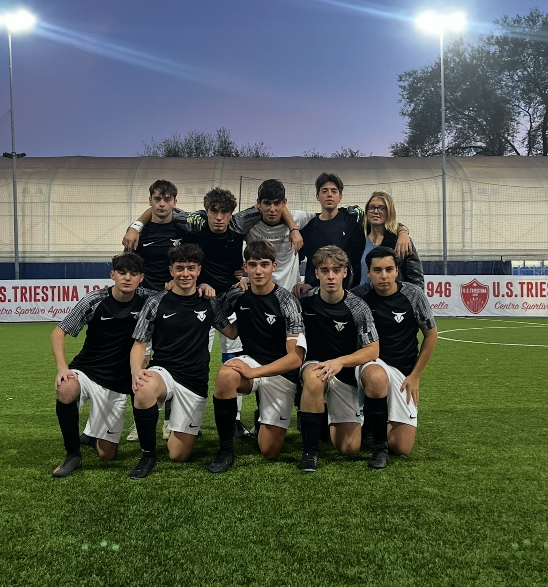
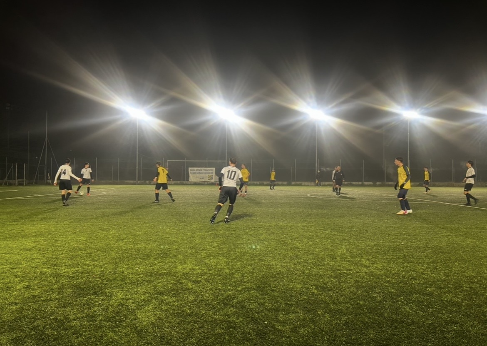
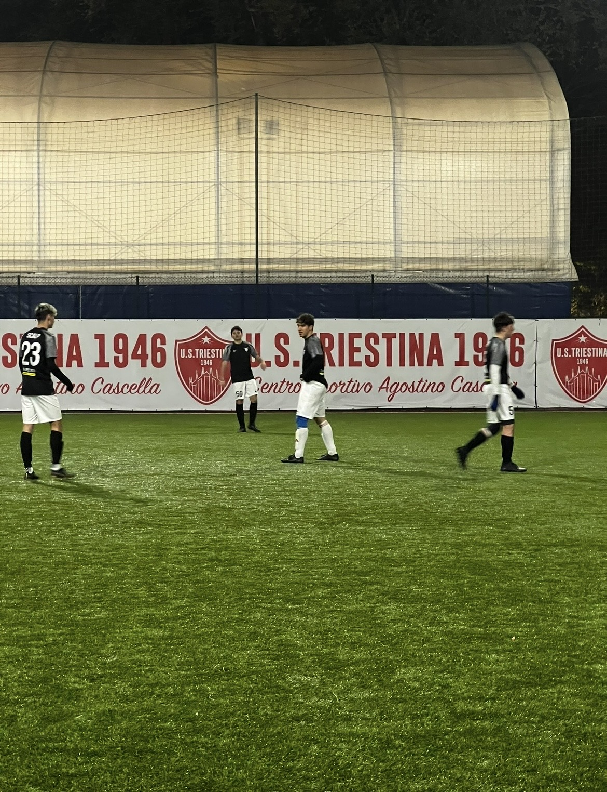

La nostra storia
Toros nasce nel 2024 da un gruppo di amici uniti dalla stessa passione per il calcio e dagli stessi valori dentro e fuori dal campo. Non è solo un progetto sportivo, ma un modo di vivere: rispetto, impegno, lealtà e fame di vittoria.
Stessi colori. Stessi valori. Stesso obiettivo.
Il gruppo
23 giocatori. Un solo simbolo.
Sul campo
Prossimi impegni
Siamo in attesa del calendario CSI 2026-2027.
Vieni con noi
Cerchiamo giocatori e staff che vogliano far parte del progetto Toros. Compila il form, ti risponderemo al più presto.
Scatti



Partnership
Toros è anche alla ricerca di sponsor che vogliano essere al fianco di un progetto giovane e in crescita.
€ —
€ —
€ —